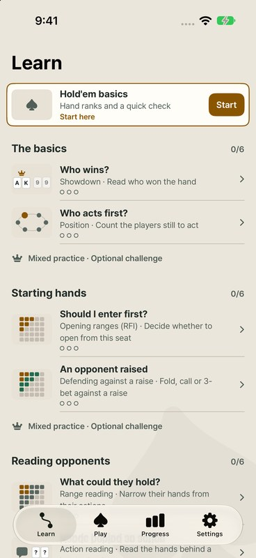
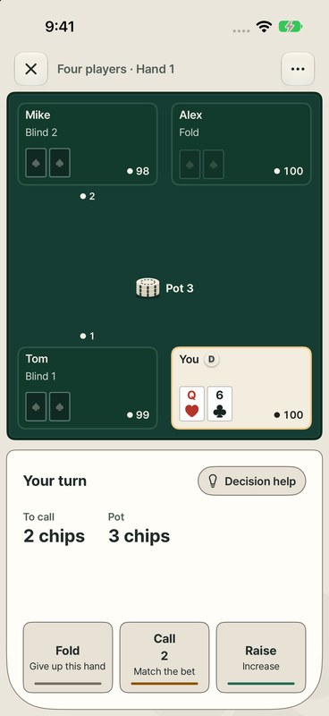

iPhone app · Personal projectTestFlight beta
Glass Table
I like teaching, so I built this iPhone app for people learning poker for the first time. Each lesson moves from a worked example to a guided problem to solving alone, and the app picks review problems based on what you solved on your own. It works offline with no account, and study records are stored on the device.
- Swift
- SwiftUI
- Problem generation
The same seed and sequence number always produce the same problem. A missed problem can be rebuilt exactly and checked again.
- Win probability
Win probability is calculated by counting every combination of the remaining cards. It is not estimated from random samples.
- Review schedule
Records of problems solved alone feed FSRS-6, which picks what to review next.
- Storage
Study records are written atomically to a JSON file. If a save fails, progress does not advance until the save succeeds.
How did I check that the app's numbers are right?
While preparing for release, I had an AI agent build a separate verification program and compared its results with the app's numbers. The calculations were correct, but I fixed seven places in the explanations and display, and replaced the sampled mid-game grading with exhaustive enumeration.


In TestFlight beta and not yet on the App Store.